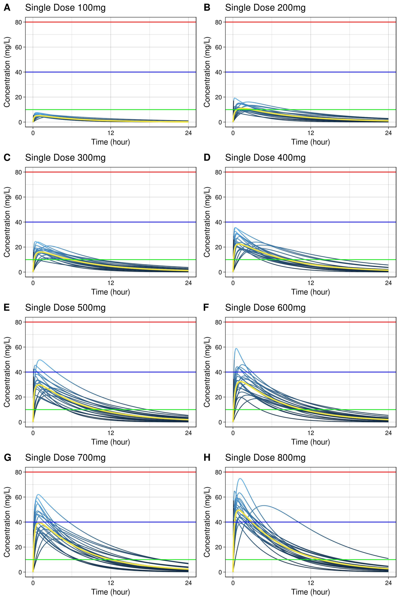
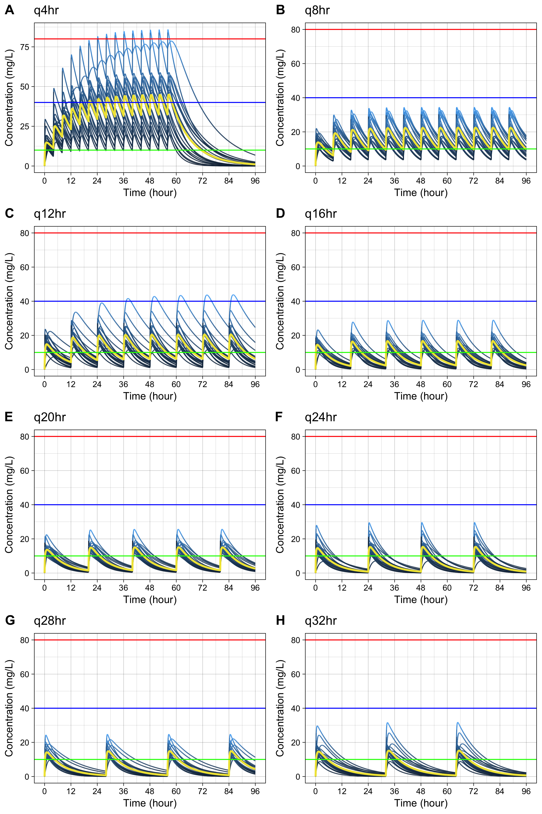

Monte Carlo Simulation of Plasma Caffeine Concentrations by Using Population Pharmacokinetic Model
- This package is used for publication of the paper about pharmacokinetics of plasma caffeine.
- Gitbook http://asancpt.github.io/CaffeineEdison is created solely dependent on this R package.
- Reproducible research is expected.
Installation
install.pacakges("devtools")
devtools::install_github("asancpt/caffsim")
# Simply create single dose dataset
caffsim::caffPkparam(Weight = 20, Dose = 200, N = 20)
# Simply create multiple dose dataset
caffsim::caffPkparamMulti(Weight = 20, Dose = 200, N = 20, Tau = 12) Single dose
Create a PK dataset for caffeine single dose
library(caffsim)
MyDataset <- caffPkparam(Weight = 20, Dose = 200, N = 20)
knitr::kable(head(MyDataset), format = 'markdown')| subjid | Tmax | Cmax | AUC | Half_life | CL | V | Ka | Ke |
|---|---|---|---|---|---|---|---|---|
| 1 | 0.9959953 | 9.670602 | 73.65128 | 4.532331 | 2.715499 | 17.75980 | 3.209090 | 0.1529014 |
| 2 | 0.7156960 | 10.211855 | 80.47951 | 4.939794 | 2.485105 | 17.71415 | 5.183737 | 0.1402893 |
| 3 | 0.8594890 | 9.814400 | 73.36944 | 4.544231 | 2.725931 | 17.87483 | 3.934138 | 0.1525011 |
| 4 | 0.3514780 | 11.507595 | 62.23129 | 3.495375 | 3.213817 | 16.20995 | 11.831892 | 0.1982620 |
| 5 | 0.7166909 | 10.788373 | 81.18156 | 4.690851 | 2.463614 | 16.67597 | 5.085271 | 0.1477344 |
| 6 | 0.5437633 | 13.477116 | 114.02343 | 5.473038 | 1.754026 | 13.85259 | 7.674990 | 0.1266207 |
Create a dataset for concentration-time curve
MyConcTime <- caffConcTime(Weight = 20, Dose = 200, N = 20)
knitr::kable(head(MyConcTime), format = 'markdown') | Subject | Time | Conc |
|---|---|---|
| 1 | 0.0 | 0.000000 |
| 1 | 0.1 | 2.843399 |
| 1 | 0.2 | 4.934570 |
| 1 | 0.3 | 6.465163 |
| 1 | 0.4 | 7.578073 |
| 1 | 0.5 | 8.379840 |
Create plots for publication (according to the amount of caffeine)
-
cowplotpackage is required
#install.packages("cowplot") # if you don't have it
library(cowplot)
MyPlotPub <- lapply(
c(seq(100, 800, by = 100)),
function(x) caffPlotMulti(caffConcTime(20, x, 20)) +
theme(legend.position="none") +
labs(title = paste0("Single Dose ", x, "mg")))
plot_grid(MyPlotPub[[1]], MyPlotPub[[2]],
MyPlotPub[[3]], MyPlotPub[[4]],
MyPlotPub[[5]], MyPlotPub[[6]],
MyPlotPub[[7]], MyPlotPub[[8]],
labels=LETTERS[1:8], ncol = 2, nrow = 4)
Multiple dose
Create a PK dataset for caffeine multiple doses
MyDatasetMulti <- caffPkparamMulti(Weight = 20, Dose = 200, N = 20, Tau = 12)
knitr::kable(head(MyDatasetMulti), format = 'markdown') | subjid | TmaxS | CmaxS | AUCS | AI | Aavss | Cavss | Cmaxss | Cminss |
|---|---|---|---|---|---|---|---|---|
| 1 | 1.5629051 | 8.722438 | 70.67756 | 1.176771 | 105.2840 | 5.889797 | 13.13880 | 1.973675 |
| 2 | 0.6547279 | 17.948527 | 158.34469 | 1.296978 | 135.3908 | 13.195391 | 25.22852 | 5.776753 |
| 3 | 0.9100442 | 9.783148 | 85.20940 | 1.269586 | 128.8005 | 7.100783 | 13.96936 | 2.966277 |
| 4 | 1.9478795 | 11.752491 | 152.08453 | 1.491204 | 179.7277 | 12.673711 | 20.98705 | 6.913154 |
| 5 | 0.1781253 | 12.716551 | 105.53832 | 1.295502 | 135.0384 | 8.794860 | 16.83973 | 3.841112 |
| 6 | 1.1633927 | 11.340643 | 103.89571 | 1.280855 | 131.5264 | 8.657976 | 16.82787 | 3.689874 |
Create a dataset for concentration-time curve
MyConcTimeMulti <- caffConcTimeMulti(Weight = 20, Dose = 200, N = 20, Tau = 12, Repeat = 10)
knitr::kable(head(MyConcTimeMulti), format = 'markdown')| Subject | Time | Conc |
|---|---|---|
| 1 | 0.0 | 0.000000 |
| 1 | 0.1 | 1.004731 |
| 1 | 0.2 | 1.923327 |
| 1 | 0.3 | 2.762565 |
| 1 | 0.4 | 3.528692 |
| 1 | 0.5 | 4.227468 |
Create plots for publication (according to dosing interval)
-
cowplotpackage is required
#install.packages("cowplot") # if you don't have it
library(cowplot)
MyPlotMultiPub <- lapply(
c(seq(4, 32, by = 4)),
function(x) caffPlotMulti(caffConcTimeMulti(20, 250, 20, x, 15)) +
theme(legend.position="none") +
labs(title = paste0("q", x, "hr" )))
plot_grid(MyPlotMultiPub[[1]], MyPlotMultiPub[[2]],
MyPlotMultiPub[[3]], MyPlotMultiPub[[4]],
MyPlotMultiPub[[5]], MyPlotMultiPub[[6]],
MyPlotMultiPub[[7]], MyPlotMultiPub[[8]],
labels=LETTERS[1:8], ncol = 2, nrow = 4)